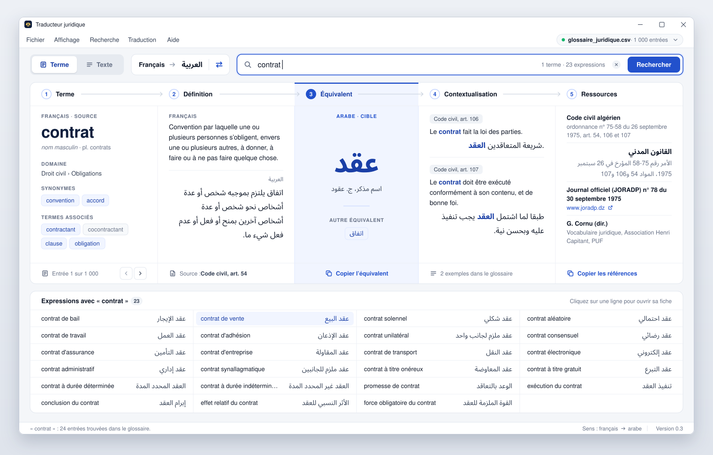
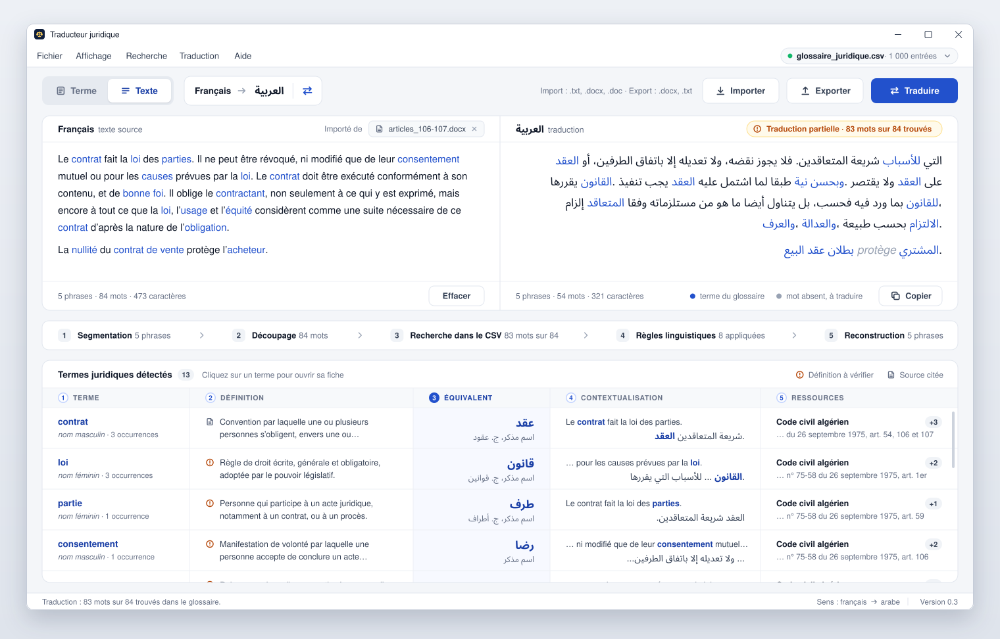
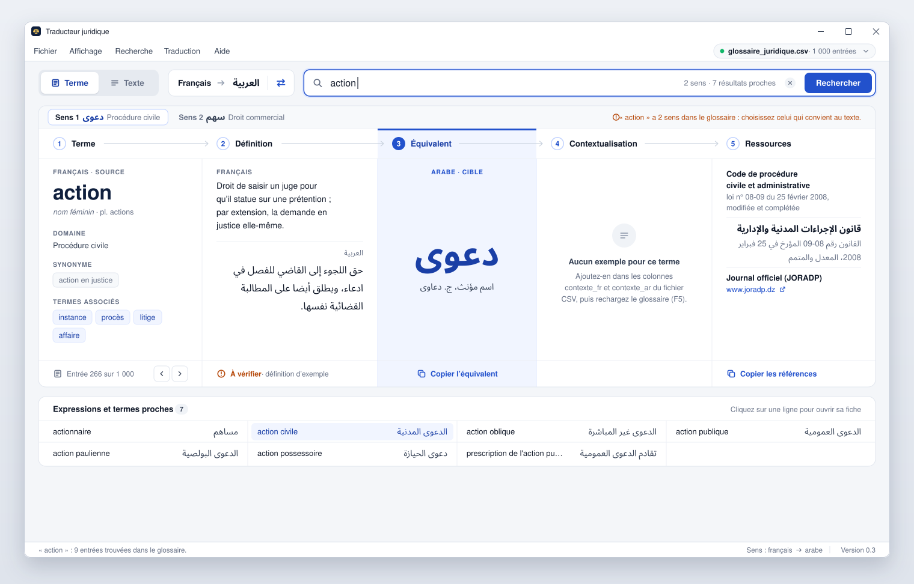
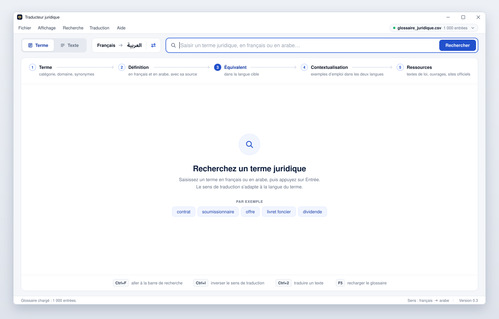
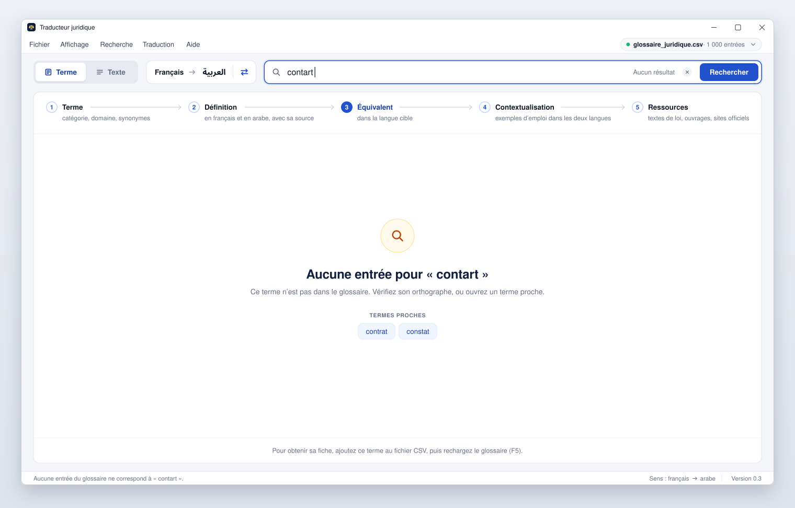

Proposition de nouvelle interface
Traducteur juridique français ⇄ arabe · maquette à valider
Rien n’est encore programmé. Ces cinq dessins montrent ce que l’application pourrait devenir. Leur contenu vient du glossaire fourni.
1Écran « Terme » : la fiche d’un terme
Les cinq champs de l’enchaînement sont réunis dans une seule fiche. L’équivalent est au centre. Les expressions qui contiennent le terme sont listées sous la fiche.

2Écran « Texte » : la traduction d’un texte
Dans les deux zones, les termes du glossaire sont en bleu. Le mot absent du glossaire reste en français, en gris. Le tableau du bas reprend les cinq champs pour chaque terme trouvé.

3Écran « Terme » : le cas le plus courant
La définition porte la mention « À vérifier » et le glossaire ne donne pas d’exemple. Ici, le terme a en plus deux sens : un onglet par sens.

4Écran « Terme » : à l’ouverture de l’application
Un seul panneau remplace les cinq boîtes vides : il rappelle l’enchaînement et propose des exemples.

5Écran « Terme » : terme introuvable
Le message est au centre, avec les termes du glossaire dont l’écriture est proche.
